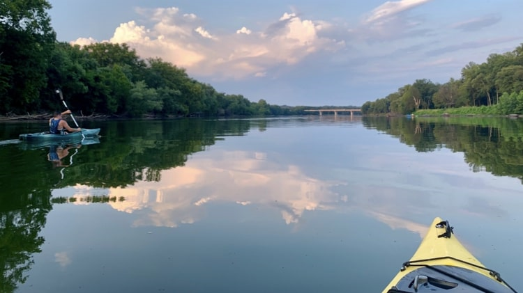

About Me

My name is the two largest words on this page besides about me. That's a weird sentence but introductions are hard...so are first impressions. Anyway, I have lived in RVA for just over a decade. I moved here when I was 22 and have loved every minute of it. I truly believe this city will be anything you want it to be. Over the course of my life I have worked many different jobs including but not limited to:
- Soccer Referee
- Food Lion Cashier
- Arby's Roast Beef Sandwich Artist
- Subway Sandwich Artist
- WaWa Sandwich Artist
and that was all before I turned 20. One of the many goals in my life is to write a collection of short stories about a character who tries a different job every year from age 16-80. If people want to read a story about making different sandwiches at different restaurants I guess I am a soon to be New York Times Bestseller.